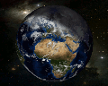
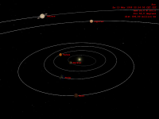
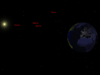
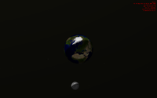
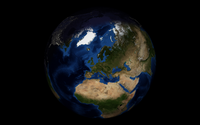
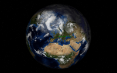

xplanet
Dieser Artikel wurde für die folgenden Ubuntu-Versionen getestet:
Ubuntu 16.04 Xenial Xerus
Ubuntu 14.04 Trusty Tahr
Zum Verständnis dieses Artikels sind folgende Seiten hilfreich:

Xplanet  berechnet Planetenansichten unseres Sonnensystems in Abhängigkeit von Datum und Uhrzeit. Als Standard wird die Erde dargestellt. Je nach Uhrzeit sieht man so einen Globus mit Tag/Nacht-Seite. Es ist auch möglich, aktuelle Wolkenbilder auf die Erde zu projizieren oder den Standort der ISS zur Erde berechnen und anzeigen zu lassen. Einen kleinen Vorgeschmack bietet diese Bildergalerie .
berechnet Planetenansichten unseres Sonnensystems in Abhängigkeit von Datum und Uhrzeit. Als Standard wird die Erde dargestellt. Je nach Uhrzeit sieht man so einen Globus mit Tag/Nacht-Seite. Es ist auch möglich, aktuelle Wolkenbilder auf die Erde zu projizieren oder den Standort der ISS zur Erde berechnen und anzeigen zu lassen. Einen kleinen Vorgeschmack bietet diese Bildergalerie .
Xplanet kann in Kombination mit einem XServer ein Hintergrundbild anzeigen, was jedoch bei modernen Desktop-Umgebungen nicht ohne weiteres funktioniert. Statt direkt auf den XServer zu zeichnen, ermöglicht Xplanet aber auch das Erstellen einer Bilddatei. Dieses Bild kann dann als Desktophintergrund verwendet werden. Im Abschnitt Desktop aktualisieren wird erläutert, wie man ständig aktualisierte Bilder erstellt.
Es gibt diverse grafische Programme, die eine Konfiguration der umfangreichen Programmparameter und -optionen erleichtern können. Dieser Artikel beschreibt ausschließlich die Steuerung über die Kommandozeile [3]. Eine unvollständige Programmliste für die grafische Steuerung findet sich im Abschnitt Konfigurationsprogramme.
Installation¶
Folgendes Paket muss installiert [1] werden:
xplanet (universe)
 mit apturl
mit apturl
Paketliste zum Kopieren:
sudo apt-get install xplanet
sudo aptitude install xplanet
Das Paket xplanet-images wird als Abhängigkeit mit installiert. Es enthält unter anderem ein Tag- und ein Nachtbild der Erde.
Weitere Planeten und Texturen¶
|  |
| Weitere Texturen |
Im o.g. Paket sind nicht alle Planeten und Monde enthalten. So fehlt zum Beispiel die Textur des Erdmondes. Weitere Quellen für Texturen finden sich im Abschnitt Weitere Texturen. Wird bei einer Berechnung das Fehlen einer Textur bemängelt, kann man entsprechende Bilder einfach im Verzeichnis ~/.xplanet/images speichern.
Konfiguration¶
Xplanet wird teilweise über ein Terminal gesteuert, was auch für Tests zu empfehlen ist da man so über eventuelle Fehler informiert wird. Außer den Optionen, die direkt beim Aufruf im Terminal angegeben werden können, sind einige Optionen über eine Konfigurationsdatei einzustellen. Es wird empfohlen, im Homeverzeichnis denOrdner ~/.xplanet zu erstellen und die Konfigurationsdatei /etc/xplanet/config/default dorthin zu kopieren.
Im Abschnitt Desktop aktualisieren werden einige der in diesem Abschnitt genannten Optionen über ein Skript gesteuert, so dass mühsam einzugebende Terminalbefehle nicht mehr notwendig sind. Die Konfigurationsdatei ~/.xplanet/config/default ist auch bei Verwendung des Skriptes trotzdem für manche Optionen notwendig.
Das erste Bild¶
xplanet -num_times 1 -output ~/Bilder/xplanet.png
Folgende Optionen sind angegeben:
| Startoptionen | |
| Parameter | Beschreibung |
num_times 1 | xplanet zeichnet nur ein Bild |
-output PFAD/ZUM/BILD | Speicherort und Name des gerenderten Bildes. Xplanet kennt folgende Grafikformate: .gif, .jpg, .ppm, .png und .tiff |
Standardmäßig wird ein quadratisches Bild mit 512x512 Pixel erstellt. Im folgenden Abschnitt wird gezeigt, wie die Größe geändert werden kann.
Die Erde drehen, Bildgröße¶
Durch die Angabe eines Breiten- (latitude) und Längengrades (longitude), lässt sich die Erde auf einen bestimmten Punkt drehen (hier München):
xplanet -num_times 1 -output ~/Bilder/xplanet.png -geometry 1680x1050 -latitude 48 -longitude 11
Die Angabe -geometry 1680x1050 skaliert das Bild auf die angegebene Größe (Breite x Höhe).
Startet man Xplanet mit dem folgenden Script dreht sich die Erde alle 5 Minuten (Parameter "sleep 300") um 10° weiter (let "Longitude=$Longitude+10"):
1 2 3 4 5 6 7 8 9 10 11 12 13 14 15 16 17 18 19 20 21 22 23 24 | #!/bin/bash #Startet Xplanet 1 Mal und legt die Bilder im angegebenen Verzeichnis ab: #xplanet -num_times 1 -config /home/thomas/.xplanet/xplanetconf -output /home/thomas/Dokumente/Desktop_Hintergrund/xplanet.jpg -geometry 1680x1050 -latitude 42 # # run () { i=0 Repeats=20 until [ "$i" = "$Repeats" ] do Longitude=0 Longmax=360 until [ "$Longitude" = "$Longmax" ] do xplanet -num_times 1 -config /home/thomas/.xplanet/xplanetconf -output /home/thomas/Dokumente/Desktop_Hintergrund/xplanet.jpg -geometry 1680x1050 -latitude 42 -longitude $Longitude sleep 300 let "Longitude=$Longitude+10" done let "i=$i+1" #uncommenting this line lets the loop repeat for infinite time! done } run exit 0 |
Der Parameter "Repeats=20" definiert die äußere Schleife (Anzahl vollständiger Rotationen). Durch Ändern der drei genannten Parameter kann man das Script seinen persönlichen Wünschen anpassen.
Breiten und Längengrade für andere Orte kann man auf Geonames.org finden. Innerhalb Deutschlands lassen sich besondere Orte über das Geodatenzentrum  ermitteln.
ermitteln.
Hintergrund einstellen¶
Es gibt verschiedene Möglichkeiten, einen Hintergrund in das Bild einzufügen.
Berechnete Sterne¶
|  |
| Sterne |
Xplanet verfügt über eine eigene Tabelle (in /usr/share/xplanet/stars/BSC) mit real existierenden Sternen, deren Position in Abhängigkeit von Datum und Zeit neu berechnet werden. Da aber der "normale" Sichtwinkel zu klein ist, werden die Sterne nicht angezeigt. Dies lässt sich nur umgehen, in dem man das Verhältnis von Beobachterstandpunkt und Objektgröße "verbiegt":
xplanet -num_times 1 -output ~/Bilder/xplanet.jpg -geometry 1680x1024 -latitude 35 -date 19980201.210000 -radius 20 -range 5 -center +1220+512
Bei nebenstehendem Bild wurde mittels -date ein Datum bestimmt (01.02.1998 um 21:00:00 Uhr), der Radius auf 20% der Bildhöhe verringert (-radius 20) und die Entfernung auf das fünffache des Erdradius eingestellt. Die Option -center verschiebt die Erde im Bild an die Position 1220 Pixel von links und 512 Pixel von oben.
magnify¶
|  |
| Magnify |
Diese Methode macht die berechneten Sterne auch sichtbar, verwendet jedoch unrealistische Größen. Man editiert in der Konfigurationsdatei ~/.xplanet/config/default den Wert für magnify:
# draw the body as if its radius were magnified by this factor magnify=25
Im Zusammenhang mit der Option -radius sind interessante Konstellationen möglich. Hier gilt es zu experimentieren.
Zufällige Sterne¶
Zufällige Sterne gleicher Größe (1 Pixel) generieren:
xplanet -num_times 1 -output ~/Bilder/xplanet.png -geometry 1680x1050 -latitude 48 -longitude 11 -label -starfreq .01 -projection orthografic
Diese Methode hat den Nachteil, das die Option -projection erforderlich ist, die viele andere Optionen ausschließt. Die Position der "Sterne" ist rein zufällig, so dass sie bei jedem neuen Bild an einer anderen Stelle auftauchen.
Statisches Hintergrundbild¶
| Beliebiges Hintergrundbild |
Ein eigenes, statisches Hintergrundbild kann wie folgt verwendet werden:
xplanet -num_times 1 -output ~/Bilder/xplanet.png -geometry 1680x1050 -latitude 48 -longitude 11 -background ~/.xplanet/images/background_kde.jpg -radius 35
Hier wurde ein Bild von KDE als Hintergrundbild eingesetzt und die Erde etwas kleiner dargestellt (-radius 35). Geeignete Sternenhimmel für ein Hintergrundbild findet man zum Beispiel auf NASA JPL .
Hinweis:
Alle verwendeten Bilder sollten die gleichen Ausmaße wie das Tagesbild (2048x1024 Pixel) haben, um unnötigen Berechnungsaufwand zu vermeiden. Die Bilder können einfach mit einem Bildbearbeitungsprogramm angepasst und im Verzeichnis ~/.xplanet/images gespeichert werden.
Anderes Bild der Erde¶
|  |
| Ein anderes Bild der Erde |
Für die Erde gibt es einige unterschiedliche Bildvorlagen. Sie reichen von der Anzeige der Staatsgrenzen, über historische Karten bis hin zu jahreszeitabhängigen Karten für jeden Monat. Quellen für diese Karten sind unter Weitere Texturen angegeben. Um sie nutzen zu können, wird in der Konfigurationsdatei ~/.xplanet/config/default im Abschnitt [earth] die Option map=BILDNAME gesetzt:
[earth]
"Earth"
color={28, 82, 110}
map=earth_blue.jpgDas Bild sollte im Verzeichnis ~/.xplanet/images vorhanden sein. Für nebenstehendes Bild wurde eine Vorlage des NASA Blue Marble-Projekts gewählt.
Es sei noch einmal darauf hingewiesen, das alle Bilder die gleichen Ausmaße wie das Tagesbild haben sollten.
Anderes Nachtbild der Erde¶
Genauso wie die Vorlage für die Erde kann man auch verschiedene Nachtbilder einstellen. Den Dateinamen trägt man in die Konfigurationsdatei ~/.xplanet/config/default bei der Option night_map= ein:
[earth]
"Earth"
color={28, 82, 110}
map=earth_blue.jpg
night_map=night.jpgDurch diese Änderung wird die Nachtkarte aus dem Paket xplanet-images für das Bild verwendet. Möchte man eine andere verwenden, kann man sie einfach in das Verzeichnis ~/.xplanet/images abspeichern. Der Dateiname ist egal, man sollte nur daran denken, den Namen in der Konfigurationsdatei entsprechend anzupassen.
Wolkenbilder¶
|  |
| Wolken |
Ähnlich wie das Tag- und Nachtbild kann man auch ein Wolkenbild auf den Globus projizieren. Geeignete Bilder findet man in der Linksammlung der Projektseite .
In der Konfigurationsdatei ~/.xplanet/config/default sind folgende Einstellungen vorzunehmen. -cloud_map=DATEINAME bezeichnet die Datei mit den Wolkenbildern:
[earth] "Earth" [...] cloud_map=latest_moll.gif cloud_gamma=1 # true if the cloud map is from the University of Wisconsin Space Science and Engineering Center cloud_ssec=true cloud_threshold=90
Hat man das aktuelle Wolkenbild vom Space, Science and Engineering Center heruntergeladen, optimiert die Einstellung cloud_ssec=true die Darstellung.
{kind=link}
Städtenamen anzeigen¶
Auch Städtenamen können auf dem Globus angezeigt werden. Hierzu dient die Option marker_file=DATEINAME in der Konfigurationsdatei ~/.xplanet/config/default. Diese Option kann mehrfach auftauchen, so dass mehrere Markerdateien genutzt werden können. Xplanet bringt von Haus aus die Datei /usr/share/xplanet/markers/earth mit, welche einige Hauptstädte enthält:
[earth] "Earth" [...] marker_file=earth
Ein eigene Markerdatei kann im Verzeichnis ~/.xplanet/markers abgelegt werden. Für München wurde eine Datei germany mit folgendem Inhalt erstellt:
48.08 11.34 "München: %A, um %H:%M" color=green timezone=Europe/Berlin
Die ersten beiden Angaben sind Breiten- und Längengrade als Dezimalzahlen. Dann folgt eine Zeichenkette, die mit beliebigen Formatierungszeichen versehen werden kann (zu den Bedeutungen siehe die Manpage von strftime). Anschließend kann eine Farbe für die Schrift fest gelegt werden (Standard ist rot). Ebenfalls optional ist die Angabe der Zeitzone.
Breiten- und Längengrade als Dezimalzahlen findet man auf getty.edu .
Weitere Optionen¶
Xplanet kennt noch eine Menge weiterer Optionen. Manche sind auch nur für Hobbyastronomen interessant. Aus diesen Gründen hier nur ein kurzer Auszug weiterer Optionen, die für den Normalbenutzer interessant sein könnten:
| Weitere Optionen auf der Kommandozeile | ||
| Option | Beschreibung | |
-config DATEINAME | Angabe einer anderen Konfigurationsdatei als ~/.xplanet/config/default. Zur besseren Übersicht empfiehlt es sich, alle Konfigurationsdateien im Ordner ~/.xplanet/config zu speichern. | |
-fov GRAD | "Field of view" ist der Grad des Sichtwinkels. Diese Option schließt die Option -radius aus. Bei Verwendung von -projection wird -fov übergangen. | |
-label | Zeigt eine Zusammenfassung einiger Daten im oberen rechten Bildbereich an. Zugehörige Optionen sind: -font, -color und -fontsize. Weitere Erläuterungen dazu in der manpage von Xplanet. | |
-date YYYYMMDD.HHMMSS | Angabe, zu welchem Datum/Uhrzeit Xplanet das Bild berechnen soll. Die Angabe erfolgt im Format JahrMonatTag.StundeMinuteSekunde. Stunden können im 24Std-Format angegeben werden. | |
-body | Bestimmt den Ansichtsplaneten. Standardwert ist earth, mögliche weitere Werte können der Manpage: entnommen werden. | |
-origin | Bestimmt den Beobachterstandpunkt. | |
-wait SEKUNDEN | Wartet SEKUNDEN bis zur nächsten Berechnung. Werden -num_times ANZAHL Bilder ausgegeben, sind diese fortlaufend nummeriert. | |
Nachfolgend ein paar Optionen, die in einer Konfigurationsdatei eingesetzt werden können. Eine genaue Beschreibung ist auf der Projektseite zu finden.
| Weitere Optionen in der Konfigurationsdatei | ||
| Option | Beschreibung | |
grid=false | Wird der Wert auf true gesetzt, wird ein Raumgitter aus Breiten- und Längengraden angezeigt. | |
grid1=6 | Gitterabstand. Der Abstand ist 90°/grid1 (hier 90/6=15°) | |
grid2=15 | Abstand der Punkte des Raumgitters. | |
satellite_file=DATEINAME | Spezifiziert eine Datei für die Anzeige eines Satelliten. Die ISS ist zwar in der Installation enthalten, funktioniert jedoch aufgrund veralteter TLE-Daten nicht. Man kann neuere Daten von Celestrak beziehen. Man kopiert den Text einfach in eine Textdatei und speichert diese unter ~/.xplanet/satellites/iss.tle ab. | |
twilight=6 | Stellt den Übergang vom Tag- zum Nachtbild und umgekehrt ein. Je höher der Wert, desto länger ist der Übergang. | |
Desktop aktualisieren¶
Die von Xplanet gerenderten Bilder können als Desktophintergrund verwendet werden. KDE-Benutzer können das von Xplanet gerenderte Bild einfach als Hintergrundbild auswählen. Das Hintergrundbild wird automatisch aktualisiert, sobald ein neues Bild von Xplanet berechnet wurde. Für andere Desktop-Umgebungen gibt es ein Skript  , welches zudem weitere Möglichkeiten wie zum Beispiel das Rotieren der Erde bietet.
Die einfachste Möglichkeit, den Desktophintergrund zu aktualisieren ist, Xplanet z.B. alle 5 Minuten ein neues Bild zeichnen zu lassen, welches das alte Bild überschreibt (gleicher Name). Den Desktop stellt man dann auf Diashow ein und gibt den Pfad zum von Xplanet berechneten Bild ein. Die Wiederholrate für Xplanet und die Diashow sollte übereinstimmen (z.B. 5 Minuten).
, welches zudem weitere Möglichkeiten wie zum Beispiel das Rotieren der Erde bietet.
Die einfachste Möglichkeit, den Desktophintergrund zu aktualisieren ist, Xplanet z.B. alle 5 Minuten ein neues Bild zeichnen zu lassen, welches das alte Bild überschreibt (gleicher Name). Den Desktop stellt man dann auf Diashow ein und gibt den Pfad zum von Xplanet berechneten Bild ein. Die Wiederholrate für Xplanet und die Diashow sollte übereinstimmen (z.B. 5 Minuten).
Möchte man ständig aktuelle Bilder haben, legt man mit einem Texteditor [4] ein kleines Skript an:
1 2 3 4 5 | #!/bin/bash ## Herunterladen der aktuellen globalen Bewölkung wget -N http://www.ssec.wisc.edu/data/comp/latest_moll.gif -P ~/.xplanet/images/ ## Bild der Erde berechnen xplanet -output ~/Bilder/xplanet.jpg -geometry 1680x1050 -longitude 11 -latitude 58 -radius 35 -range 6 -wait 60 |
Zeile 3 lädt einmalig das aktuelle Wolkenbild vom Space Science an Engineering Center herunter, falls ein aktuelles Bild vorliegt (siehe auch wget). Zeile 5 startet Xplanet mit den gewünschten Optionen. Die letzte Angabe (-wait 60) lässt xplanet 60 Sekunden warten, bis ein neues Bild berechnet wird.
Dieses Skript speichert man ins Verzeichnis ~/.xplanet/scripts, macht es ausführbar [5] und lässt es bei jedem Systemstart per Autostart [6] ausführen.
Fertige Bilder¶
Hinweis:
Diese Methode lädt in regelmäßigen Zeitabständen ein Bild von einem Fremdserver herunter. Man sollte sich im Klaren darüber sein, das dieses Vorgehen auf Dauer einen erheblichen kostenpflichtigen Netzverkehr zu Lasten des Serverbetreibers verursacht.
Anstatt die Bilder in Intervallen von Xplanet immer wieder neu berechnen zu lassen, besteht die Möglichkeit, bereits fertig gerenderte Bilder der Erde inkl. Tag/Nachtdarstellung, Jahreszeit (Vegetation, Schneebedeckung), Bewölkung und Sternenhimmel herunterzuladen. Beispielbilder:
{kind=link}
{kind=link}
Im Folgenden ein Skript, das noch für die jeweils eingesetzte Desktop-Umgebung (GNOME 2 oder 3, Xfce oder LXDE) angepasst werden muss.
1 2 3 4 5 6 7 8 9 10 11 12 13 14 15 16 17 18 19 20 21 22 23 24 25 26 27 28 29 30 31 32 33 34 35 36 37 38 39 40 41 42 43 44 45 46 47 48 | #!/bin/sh ## ## comments: change SOURCE and OUTPUT as required ## +uncomment update/refresh routine for your desktop environment ## caveats: don't refresh during video playback? ## not tested with compiz et al ## see also: http://www.ruwenzori.net/earth/ for other resolutions and regions ## SOURCE="http://www.ruwenzori.net/earth/Earth_EMEA+Atlantic_1280x1024.jpg" OUTPUT=$HOME/Bilder/xplanet.jpg APPEND=.old ## check for old image if [ -e "$OUTPUT" ]; then mv $OUTPUT $OUTPUT$APPEND fi ## get new image wget -q $SOURCE -O $OUTPUT ## check for new image and then remove old image if [ -e "$OUTPUT" ]; then if [ -e "$OUTPUT$APPEND" ]; then rm -f $OUTPUT$APPEND fi ## new image not found, use old image else if [ -e "$OUTPUT$APPEND" ]; then mv $OUTPUT$APPEND $OUTPUT fi fi ## uncomment refresh routine for your desktop environment (or use external application) ## only for GNOME 2! #gconftool -t str -s /desktop/gnome/background/picture_filename "$OUTPUT" ## same effect, but uses gconftool-2: ##gconftool-2 --type String --set /desktop/gnome/background/picture_filename "$OUTPUT" ## only for GNOME 3! ##gsettings set org.gnome.desktop.background picture-uri "file:///$OUTPUT"` ## only for Xfce! #export DISPLAY=:0 && xfdesktop --reload ## only for LXDE! (pcmanfm as desktop background manager; Lubuntu et al.) #pcmanfm -w $OUTPUT ## Openbox, Fluxbox and other standalone window managers; external program required (feh) #feh --bg-scale $OUTPUT |
Dieses Skript kann beispielsweise unter ~/bin/xplanet_download.sh abgespeichert, muss aber auf jeden Fall mit
chmod 755 ~/bin/xplanet_download.sh
ausführbar [5] gemacht werden. Nun muss man nur noch dafür sorgen, dass dieses Skript in regelmäßigen Intervallen ausgeführt wird, vorzugsweise via Benutzer-crontab. Beispiele:
Jede volle Stunde:
0 * * * * /home/username/bin/xplanet_download.sh > /dev/null
Alle 3 Stunden:
* */3 * * * /home/username/bin/xplanet_download.sh > /dev/null
Die letzte Hürde besteht in der Aufgabe, das als Hintergrund fest eingestellte Bild ~/Bilder/xplanet.jpg regelmäßig zu aktualisieren. Das jeweilige konkrete Vorgehen ist von der eingesetzten Desktop-Umgebung abhängig. Als weiteres Hilfsmittel können die im Artikel Desktop-Hintergrund genannten Programme dienen, die z.T. auch in das Skript eingebaut werden können.
Links¶
Weitere Texturen¶
Flatplanet - Nach Themen sortierte Liste von Erd-, Mond- und Planetentexturen
NASA JPL
- Die Nasa bietet eine Vielzahl von TexturenMonthly Global Images
- Bilder der Erde im Verlauf der Jahreszeiten
Marker-Dateien¶
Wizabit markers
- Markerdateien für die Anzeige von Erdbeben, Satelliten, Stürmen und mehrTotalmarker
- Programm für die automatische Erstellung von Markerdateien
Skripte¶
Hans Ecke
- weitere Ereignisse wie Erdbeben, Vulkanausbrüche, Mondphasen und Wetterkurzinfos in Xplanet einbinden
Konfigurationsprogramme¶
xplanetconfig - Nimmt einem außer der Konfiguration das Herunterladen von zusätzlichen Bildern ab
xplanetFX
- weiteres KonfigurationsprogrammGlobal Village
- weiteres Konfigurationsprogramm für GNOME 2 (in Python)
Fertig gerenderte Bilder der Erde¶
A real time simulated view of the Earth
- Berücksichtigung von Tag/Nacht, Jahreszeit (Vegetation, Schneebedeckung), Bewölkung und SternenhimmelOur Planet Earth From Space
- Verschiedene Darstellungen wie Vulkanausbrüche, Satelliten oder Erdbebenmarkierungen Erde
- Darstellung der Erde und des Mondes, Aktualisierungsintervall: alle 3 Stunden
- Erstellt mit Inyoka
-
 2004 – 2017 ubuntuusers.de • Einige Rechte vorbehalten
2004 – 2017 ubuntuusers.de • Einige Rechte vorbehalten
Lizenz • Kontakt • Datenschutz • Impressum • Serverstatus -
Serverhousing gespendet von